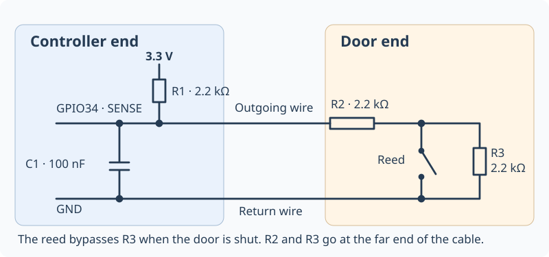

Build a door input that detects its own wiring faults
Make a small door monitor from three resistors, a magnetic contact and your ESP32. Use a meter to prove what each of four states looks like, then let the board identify them on the laptop.


Watch how the resistor ratio sets the midpoint. In this build the door and its cable change the lower resistance. Afrotechmods · Voltage dividers.
Find the parts on your bench
| Quantity and part | Specification | Sources |
|---|---|---|
| 1 · ESP32 and breadboard View board | Classic ESP32-WROOM from P189. Keep the USB data cable and red LED branch on GPIO27. Use the 830-point board and jumpers. | P183 · Board and cable suppliers · Ubahnverleih · CC0, resized |
| 3 · 2.2 kΩ resistors View resistors | Axial through-hole ¼ W, ±5% or better. Measure before fitting. Use one at the controller and the other two at the door. | element14 India · element14 Australia · David Ludovino · CC BY-SA 3.0, resized |
| 1 · 100 nF capacitor View packages | Non-polarised ceramic or film, often marked 104, at least 10 V. It goes across the analog input and GND to steady readings. | P187 · Capacitor sources · Aka · CC BY-SA 3.0 |
| 1 · Magnetic contact and cable View contact | A dry reed that closes beside its magnet, two short leads for breadboard work and a 30–50 cm two-core cable for the soldered version. Use a jumper to emulate the reed initially if needed. | P187 · Magnetic contact suppliers |
| 1 · Optional solderable board View soldered example | Pad-per-hole board with at least five columns and twelve rows. Small plastic housing, wire clamp and insulated hook-up wire. | P188 · Board, tools and supplies · Alexander Jones · Public domain |


Use a multimeter, wire stripper and permanent marker. Do this as a separate exercise with the 5 V fan supply and the 5 V door indicator disconnected. Move the ESP32’s dial and its 100 nF capacitor off GPIO34 before using this input. Use the P189 red alarm lamp (GPIO27, 1 kΩ and red LED to GND). P189 · Lamp wiring.
1 · Assemble the two ends and measure the resistance


- Unplug USB. Join ESP32 3V3 and GND to the red and blue rails. Use the 2.2 kΩ resistor R1 from the red rail to a6. Join b6 to GPIO34. Connect 100 nF from e6 to GND. This is the controller side of the breadboard.
- Build the door side across the centre gap. R2 goes g16–g20 and R3 goes i20–g24. The wired contact goes h20–h24. The two cable jumpers run c6–f16 (outgoing) and blue GND rail–f24 (return). Use separate holes in each shared strip for the meter.
- Leave USB unplugged and lift both jumpers only at the controller ends. Set the meter to resistance and probe those two loose ends. With the magnet beside the switch, expect about 2.2 kΩ. Far enough away to open it, expect about 4.4 kΩ. If both positions give about 4.4 kΩ, check the contact alone in continuity mode with the magnet held next to it.
2 · Read the four voltages
Return the two jumpers, select DC volts and plug USB in. Place black on the blue GND rail and red at d6. R1 is the top of a voltage divider. The cable and resistors make its lower leg. The current under a direct cable short is about 1.5 mA through R1.
| What to try | Loop resistance | Expected meter reading at d6 | Firmware state |
|---|---|---|---|
| Door shut · magnet next to the reed | 2.2 kΩ | 1.65 V | door_shut |
| Door open · move the magnet away | 4.4 kΩ | 2.20 V | door_open |
| Cable open · lift the c6 end of the outgoing jumper | Open circuit (OL) | Near 3.3 V | cable_open |
| Cable short · with c6 restored, jumper i16 to i24 | Near 0 Ω | Near 0 V | cable_short |
Unplug USB before each jumper change. Keep R1 in the circuit. If you see 3.3 V for every door position, verify both outgoing and return jumpers and then measure the disconnected loop. For 0 V in every position, check for a short to the ground rail at SENSE or along the pair.
3 · Let the ESP32 report what the meter proved
- Save supervised-door.ino in a folder named
supervised-door. Open it in Arduino IDE. Select ESP32 Dev Module and the USB port, then upload. Open Serial Monitor at 115200 baud. P183 · Board and upload setup. - Repeat all four checks. Each line gives the millisecond timestamp, SENSE in millivolts and the state. The red lamp is out only when the measured state is
door_shut. If you missed the header, reset the ESP32. - If the meter reads normally but the reported state differs, compare the ESP32 reading with your meter at d6, using GND for both. The sketch averages 16 readings and accepts a state after 80 ms. Its voltage windows are in
classify(). Values between the windows givecheck_wiring. The classic ESP32 ADC stops increasing near the top of its range, so a physical 3.3 V can be reported lower while still within the cable-open window. Espressif · Calibrated ADC millivolts and input ranges.
ms,sense_mV,zone
1500,1640,door_shut
3500,2200,door_open
5500,3100,cable_open
7500,0,cable_short4 · Make a small wired door module
- Mark A–E and 1–12 on a 2.54 mm pad-per-hole board. Fit R2 at B2–B6 and R3 at C6–C10. Put the reed leads at D6 and D10. Put the outgoing wire at A2 and return at A10.
- Use short insulated wires on the solder side to join A2 to B2, B6 to C6 to D6, and A10 to C10 to D10. Mark the two cable leads with their terminal names. Fit the assembly in a small enclosure beside the contact and clamp the cable so movement does not pull on the joints. P188 · How to wire pad-per-hole PCB and check solder joints.
- Repeat the disconnected 2.2 kΩ and 4.4 kΩ checks at the end of the cable. Then connect the module to c6 and GND in place of the original door-side jumpers. Repeat all four voltage and firmware checks from the controller side. Keep your measured reference values with the wiring drawing.
The voltage table and sample log show expected results. Real controllers use their own resistor values and acceptance windows. For the trainer, the useful skill is locating the fault by comparing a device-end resistance with a controller-end voltage. P04 · Compare one and two end-of-line resistors.
P63 · Trace a point from field cable to screen